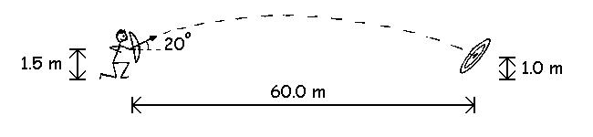
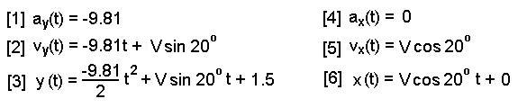
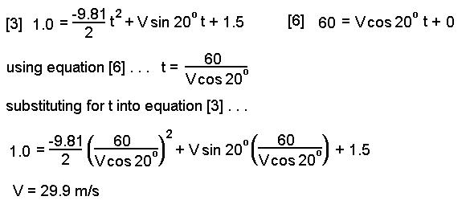

Advanced Projectile Example
An archer shoots an arrow at an angle of 20 degrees above horizontal at a target that is 60 meters away. Find the velocity required to have a bullseye if the initial height is 1.5 meters and the height of the target is 1.0 meters. 
Step 1: The first step in every projectile problem is to write the equations of motion.
Since gravity is the only force acting on the subject, the acceleration in the y direction is -9.81 m/s/s and the acceleration in the x direction is 0 m/s/s. We use integral calculus to yield the velocity and displacement equations.

Step 2: Now we substitute the given information of this particular problem.

Step 3: This is the most difficult step because we must look at our six equations of motion and decide which one or ones will help us find the answer to the question that we have been asked. In this case we have been asked to find the velocity (V). If we knew the time in the air, it would make the problem easier. Since we don't know either time or velocity, we have two unlnowns and we must use two equations to solve them. We know the horizontal and vertical position required for a bullseye to be 60 meters and 1.0 meters, respectively so we will use equations [3] and [6].
